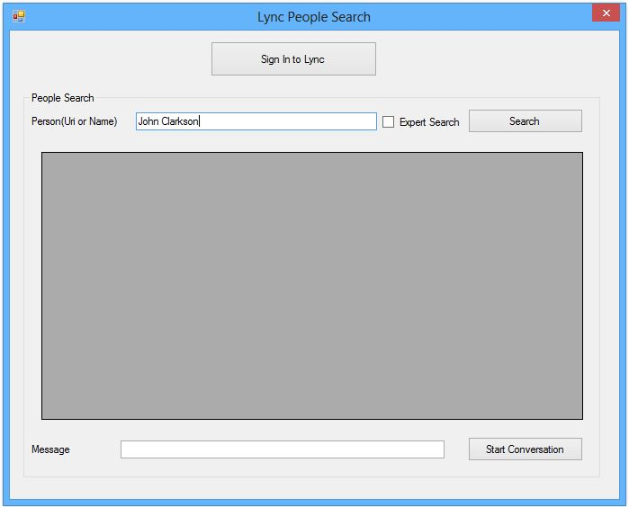
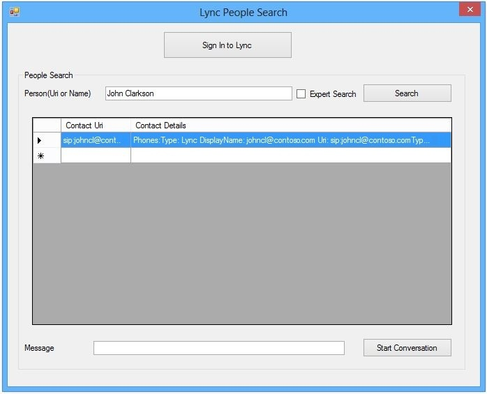

The Lync 2013 API includes a set of managed classes with methods that you can use to add collaboration functionality to your application. Using this Lync API, you can find users, start conversations, share resources, and initiate a meet-now meeting. This code sample shows you how to use the Lync 2013 API to search for people in Lync 2013 and start IM conversations with them.
Description of the sample
-
Login form - Before searching for people in Lync, you need to sign in to the Lync client by using this form.
-
Search form - After signing in to the Lync client, use this form to search for people or contacts in Lync and start conversations with them. This form is shown in the following figure.

Prerequisites
-
Microsoft Visual Studio 2012.
-
Windows 7 or Windows 8.
-
Microsoft Office 2013.
-
Lync 2013 SDK.
Key components of the sample
-
The 0365_Lyncpeoplesearch_cs project.
-
The login.cs file.
-
The login.Designer.cs file, which includes the custom sign-in form that contains the C# code that uses the Lync 2013 API to sign a user in to Lync.
-
The Search.cs file.
-
The Search.Designer.cs file, which declares the custom sign-in form that contains the C# code that uses the Lync 2013 API to search for users and start IM conversations.
Configure the sample
-
Extract O365_lyncpeoplesearch_cs.zip into a folder.
-
Open O365_lyncpeoplesearch_cs.sln by using Visual Studio 2012 as an administrator.
-
Add a reference to the Microsoft.Lync.Model assembly, which you can find in C:\Program Files (x86)\Microsoft Office 2013\LyncSDK\Assemblies\Desktop.
Build the sample
Press F5 to build and run the sample.
Run and test the sample
-
If you are not signed in to Lync, click the Sign In to Lync button, and then go to step 2. If you are already signed in, go to step 3.

-
Enter your credentials on the Login form, and click the Sign In button. Use your Office 365 user name. For example: "<YourName.CompanyName.onmicrosoft.com>".

-
Enter the text (person's name) to search for, and click the Search button.
The search form shows a list of contacts that match the search text.
 -
Select the contact that you want to start a conversation with. Then, in the Message box, type the message you want to send, and click the Start Conversation button.

The IM conversation window opens, enabling you to start conversing with the contact.

Change log
|
Version
|
Date
|
|---|---|
|
First version
|
February 28, 2013
|